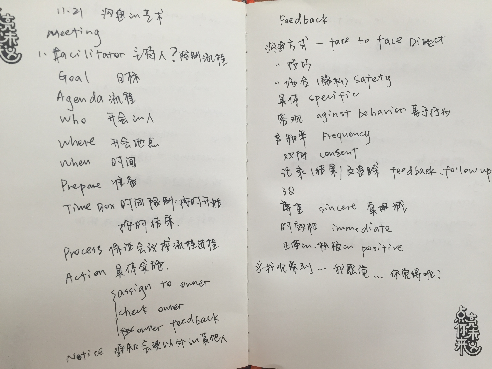

上完课后，特意去网上百度了一下沟通技巧：
所谓沟通技巧，是指人具有收集和发送信息的能力，能通过书写、口头与肢体语言的媒介，有效与明确地向他人表达自己的想法、感受与态度，亦能较快、正确地解读他人的信息，从而了解他人的想法、感受与态度。 沟通技能涉及许多方面，如简化运用语言、积极倾听、重视反馈、控制情绪等等。虽然拥有沟通技能并不意味着成为一个有效的管理者，但缺乏沟通技能又会使管理者遇到许多麻烦和障碍。
经过本次课程，感觉对上面这种抽象的定义有了更深刻的理解。
本周的课程从沟通的角度入手，详细介绍了项目流程、会议以及Feedback各方面需要注意的事项。特别是上午项目流程方面，从一个实际的简单施工项目出发，讲解了在制定项目计划过程中可能遇到的各种问题，以及解决方案，形象的了解了公司工作的方式，很棒。
下午的课程从Meeting和Feedback两方面针对上午的内容以关键字的形式给出了总结如图所示， 加强了我对项目沟通的认识。  同时学习了如何正确的给别人做Feedback：
我观察到...我感觉...你觉得呢？
很有启发的一个句式，好的沟通方式可以拉近人与人之间的距离，我在这方面学习的地方还有很多。